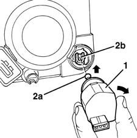

5540C24 MOTOR (ONE) FOR L/H OR R/H HEADLAMP/LIGHT CLUSTER ALIGNMENT CORRECTION - R+R
- Path
- Procedures > 55 ELECTRICAL EQUIPMENT > 5540 EXTERIOR LIGHTING > 5540C HEADLAMP/LIGHT CLUSTER ALIGNMENT CORRECTION DEVICES > 5540C24 MOTOR (ONE) FOR L/H OR R/H HEADLAMP/LIGHT CLUSTER ALIGNMENT CORRECTION - R+R
- Kind
- repair procedure (removal / refitting; the operation number is the code)
- Applies to
- all engines; all production periods
- Interactive page
- https://sloeber94.github.io/elrnDB-fMltpl/en/#/2891935
Applies to: all engines; production: fino a 05/99, da 09/03, da 06/99 a 03/02, da 04/02 a 08/03, fino a 05/04
 Removing
Removing
 Refitting
RefittingOp. 5550C30 L/H OR R/H FRONT TURN SIGNAL (ONE) - R+R
.
.
1. Rotate the motor, then extract it gently.
2. Release the spherical end (2a) of the motor from the ertainer (2b), lifting it.

Applies to: all engines; production: fino a 05/99, da 09/03, da 06/99 a 03/02, da 04/02 a 08/03, fino a 05/04
Refitting
RemovingIf necessary, check the electrical operation of the motor and check that the control pin travel is regular according to the positions selected.
Engage the spherical end of the motor in the headlamp retainer.
Fully rotate the motor in its housing.
Op. 5550C30 L/H OR R/H FRONT TURN SIGNAL (ONE) - R+R
Op. 5540B38 HEADLAMP/LIGHT CLUSTER LIGHT BEAM - POSITION
Check that the motor is working by operating the special switch from the passenger compartment, with the dipped headlamps switched on.
Applies to: all engines; production: da 06/04
- Op. 5540B78 LEFT FRONT LIGHT CLUSTER WITH TURN SIGNAL AND FOGLAMP R R
- Op. 5540B79 RIGHT FRONT LIGHT CLUSTER WITH TURN SIGNAL AND FOGLAMP R R
- The motor cannot be separated from the light.
Topics linked from this page (4)
- 5540B38 headlamp/light cluster light beam - position
- 5540B78 LEFT FRONT LIGHT CLUSTER WITH TURN SIGNAL AND FOGLAMP R R
- 5540B79 RIGHT FRONT LIGHT CLUSTER WITH TURN SIGNAL AND FOGLAMP R R
- 5550C30 l/h or r/h front turn signal (one) - r+r